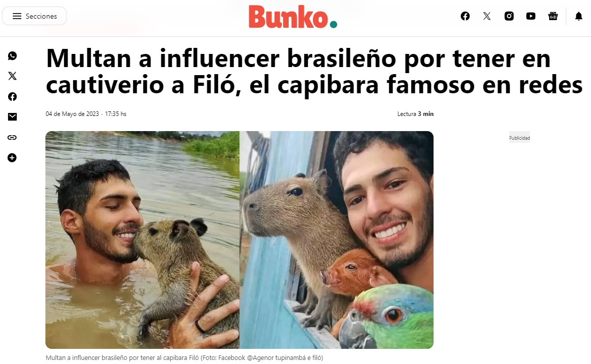

Según National Geographic , esto podría deberse a su carácter tranquilo,
ya que no son agresivos
ni hacen mucho ruido. Además, son excelentes nadadores,
lo que hace que muchos animales los
utilicen como 'autobús'.
Sin embargo, corren un peligro fuera de la naturaleza.
Según Infobae, estos animales son considerados exóticos y han logrado recolectar miles de millones
de visualizaciones en la
red social de TikTok, ya que los usuarios de la plataforma los consideran bonitos.
Leanne Nieforth investigadora posdoctoral de la Universidad de Arizona explicó en entrevista para la
misma revista
que los animales exóticos aprovechan el amor por la novedad para conquistar los corazones
de las personas, sin embargo,
esto conlleva riesgo porque las personas quieren domesticarlas por el
simple hecho de considerarlos bonitos.